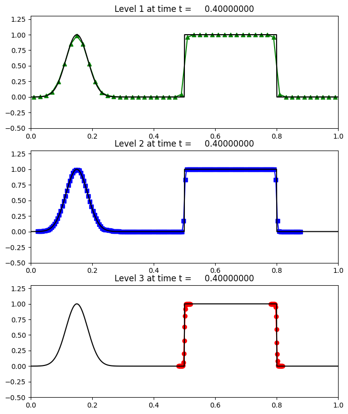

< < < Index > > >

Image source: /Users/rjl/clawpack_src/clawpack_master/amrclaw/examples/advection_1d_example1/_plots/frame0002fig2.png
Other figures at this time: Solution By AMR Level All Figures
Other frames: 0 1 2 3 4 All Frames